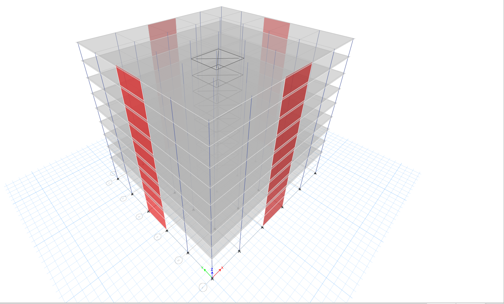
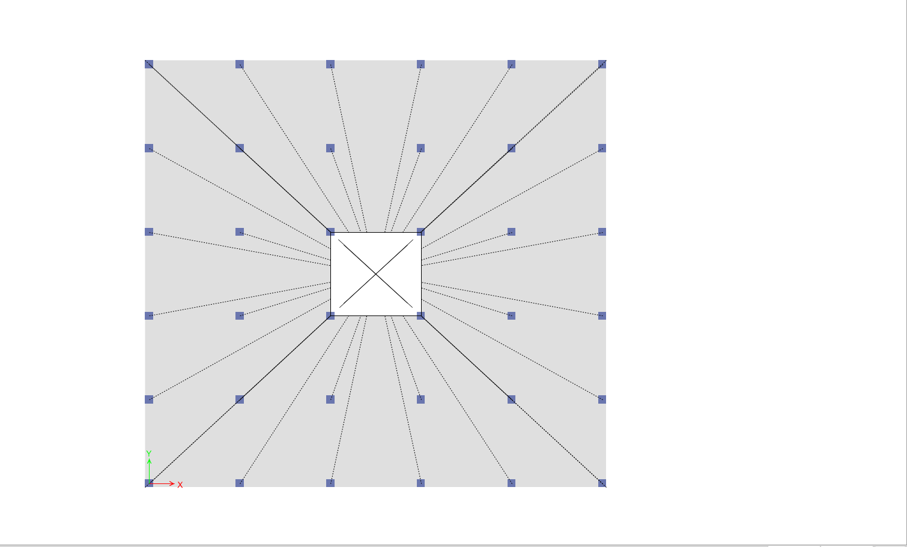
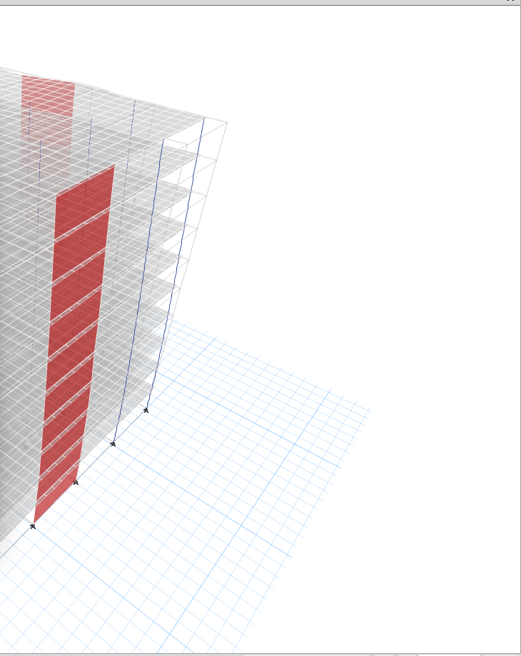

Pour ce projet de génie structural, j’ai conçu le système de reprise des charges gravitaires et latérales d’un immeuble de bureaux en béton armé de dix étages à Québec. À l’aide d’ETABS, j’ai modélisé l’ensemble du bâtiment — colonnes, murs de refend et diaphragmes de plancher — afin de tracer le cheminement des charges gravitaires à travers la structure et des charges latérales (vent et séisme) jusqu’aux fondations, par l’entremise d’un noyau de murs de refend appariés.
Une analyse modale a permis de déterminer les périodes fondamentales et les modes propres du bâtiment, confirmant que les murs de refend offraient une rigidité latérale suffisante face à la demande sismique propre aux mouvements de sol de calcul pour Québec. L’armature des dalles a ensuite été conçue dans SAFE à partir des résultats de l’analyse ETABS.



